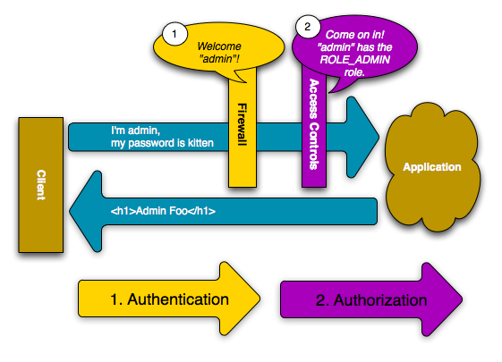

La sécurité¶
La sécurité est un processus comprenant 2 étapes, dont le but est de prévenir un utilisateur d’accéder à une ressource à laquelle il n’a pas accès.
Dans la première étape du processus, le système de sécurité identifie l’utilisateur en lui demandant de soumettre une sorte d’identification. C’est ce qu’on appelle l’authentification, et cela signifie que le système cherche à savoir qui vous êtes.
Une fois que le système sait qui vous êtes, l’étape suivante est de déterminer si vous avez accès à une ressource donnée. Cette étape du processus est appelée autorisation, et cela signifie que le système vérifie si vous avez les privilèges pour exécuter certaines actions.

Comme la meilleure façon d’apprendre est par l’exemple, alors plongeons dans le vif du sujet.
Note
Le composant de sécurité de Symfony est disponible en tant que librairie indépendante, et peut être utilisé pour tout projet PHP.
Exemple simple: l’authentification HTTP¶
Le composant de sécurité peut être configuré grâce aux fichiers de configurations de l’application. En fait, la plupart des réglages de sécurité ne nécessitent que l’utilisation d’une configuration adéquate. La configuration suivante indique à Symfony de sécuriser toute URL correspondant au format /admin/* et de demander à l’utilisateur de s’authentifier en utilisant l’authentification HTTP (c’est-à-dire un bon vieux système avec login/mot de passe) :
- YAML
# app/config/config.yml security: firewalls: secured_area: pattern: ^/ anonymous: ~ http_basic: realm: "Secured Demo Area" access_control: - { path: ^/admin, roles: ROLE_ADMIN } providers: in_memory: memory: users: ryan: { password: ryanpass, roles: 'ROLE_USER' } admin: { password: kitten, roles: 'ROLE_ADMIN' } encoders: Symfony\Component\Security\Core\User\User: plaintext
- XML
<!-- app/config/config.xml --> <srv:container xmlns="http://symfony.com/schema/dic/security" xmlns:xsi="http://www.w3.org/2001/XMLSchema-instance" xmlns:srv="http://symfony.com/schema/dic/services" xsi:schemaLocation="http://symfony.com/schema/dic/services http://symfony.com/schema/dic/services/services-1.0.xsd"> <config> <firewall name="secured_area" pattern="^/"> <anonymous /> <http-basic realm="Secured Demo Area" /> </firewall> <access-control> <rule path="^/admin" role="ROLE_ADMIN" /> </access-control> <provider name="in_memory"> <memory> <user name="ryan" password="ryanpass" roles="ROLE_USER" /> <user name="admin" password="kitten" roles="ROLE_ADMIN" /> </memory> </provider> <encoder class="Symfony\Component\Security\Core\User\User" algorithm="plaintext" /> </config> </srv:container>
- PHP
// app/config/config.php $container->loadFromExtension('security', array( 'firewalls' => array( 'secured_area' => array( 'pattern' => '^/', 'anonymous' => array(), 'http_basic' => array( 'realm' => 'Secured Demo Area', ), ), ), 'access_control' => array( array('path' => '^/admin', 'role' => 'ROLE_ADMIN'), ), 'providers' => array( 'in_memory' => array( 'memory' => array( 'users' => array( 'ryan' => array('password' => 'ryanpass', 'roles' => 'ROLE_USER'), 'admin' => array('password' => 'kitten', 'roles' => 'ROLE_ADMIN'), ), ), ), 'encoders' => array( 'Symfony\Component\Security\Core\User\User' => 'plaintext', ), ));
Tip
La distribution Symfony Standard place la configuration de la sécurité dans un fichier séparé (app/config/security.yml). Si vous ne voulez pas utiliser un fichier séparé, vous pouvez mettre la configuration directement dans le fichier principal de configuration (app/config/security.yml).
Le résultat final de cette configuration est un système de sécurité entièrement fonctionnel, que l’on peut décrire de la manière suivante :
- Il y a 2 utilisateurs dans le système (ryan et admin);
- Les utilisateurs s’authentifient grâce à une authentification basique HTTP;
- Toute URL correspondant au format /admin/*` est sécurisée, et seul l’utilisateur admin peut y accéder
- Toutes les URLs qui ne correspondent pas au format /admin/* sont accessibles par tous les utilisateurs (et l’utilisateur n’aura pas à s’authentifier).
Voyons rapidement comment la sécurité fonctionne et quel est le rôle de chaque élément de la configuration.
Comment fonctionne la sécurité : authentification et autorisation¶
Le système de sécurité de Symfony commence par déterminer qui est l’utilisateur (c’est l’authentification) puis il voit si l’utilisateur a accès à une ressource ou une URL.
Pare-feu (authentification)¶
Lorsqu’un utilisateur fait une requête à une URL qui est protégée par un pare-feu (firewall), le système de sécurité est activé. Le rôle du pare-feu est de déterminer si un utilisateur doit ou ne doit pas être authentifié, et s’il doit l’être, de retourner une réponse à l’utilisateur afin d’entamer le processus d’authentification.
Un pare-feu est activé lorsque l’URL d’une requête correspond à un masque d’expression régulière contenu dans la configuration du pare-feu. Dans cet exemple, le masque (^/) va correspondre à toutes les requêtes entrantes. Le fait que le pare-feu soit activé ne veut pas dire que la boite d’authentification HTTP contenant les champs « nom d’utilisateur » et « mot de passe » sera affichée pour chaque requête. Par exemple, tout utilisateur peut accéder /foo sans qu’on lui demande de s’authentifier.

Cela fonctionne d’abord parce que le pare-feu autorise les utilisateurs anonymes grâce au paramètre de configuration anonymous. En d’autres termes, un pare-feu ne nécessite pas qu’un utilisateur soit totalement authentifié immédiatement. Et comme aucun role n’est nécessaire pour accéder l’URL /foo``(dans la section ``access_control), la requête peut être satisfaite sans jamais demander à l’utilisateur de s’authentifier.
Si vous supprimez la clé anonymous, le pare-feu va toujours demander à l’utilisateur de s’authentifier immédiatement.
Contrôle d’accès (autorisation)¶
Par contre, si un utilisateur demande /admin/foo, le système se comporte différemment. C’est à cause de la section de la configuration access_control qui stipule que toute requête correspondant au masque d’expression régulière ^/admin (c’est à dire /admin ou tout ce qui correspond à /admin/*) requiert le rôle ROLE_ADMIN. Les rôles sont à la base de la plupart des mécanismes d’autorisation : un utilisateur peut accéder à /admin/foo seulement s’il possède le role ROLE_ADMIN.

Comme précédemment, quand l’utilisateur fait une requête, le pare-feu ne lui demande pas de s’authentifier. Par contre, dès que la couche de contrôle d’accès refuse l’accès à l’utilisateur (parce que l’utilisateur anonyme ne possède pas le rôle ROLE_ADMIN), le pare-feu entre en action et initialise le processus d’authentification. Le processus d’authentification dépend du mécanisme d’authentification que vous utilisez. Par exemple, si vous utilisez la méthode d’authentification par formulaire de connexion, l’utilisateur sera redirigé à la page de formulaire de connexion. Si vous utilisez l’authentification HTTP, l’utilisateur recevra une réponse HTTP 401 et verra donc la boite contenant les champs login et mot de passe.
L’utilisateur a maintenant la possibilité de soumettre ses informations d’identification à l’application. Si ces informations sont valides, la requête initiale peut être lancée à nouveau.

Dans cet exemple, l’utilisateur ryan``s'authentifie avec succès auprès du pare-feu. Mais comme ``ryan n’a pas le rôle ROLE_ADMIN, il se verra refuser l’accès à /admin/foo. Enfin, cela veut dire que l’utilisateur verra un message indiquant que l’accès lui est refusé.
Tip
Quand Symfony refuse à l’utilisateur l’accès, l’utilisateur voit une page d’erreur et recevra un code d’erreur HTTP 403 (Forbidden). Vous pouvez personnaliser la page d’erreur pour refus d’accès en suivant les instructions se trouvant dans la page du cookbook Pages d’erreurs<cookbook-error-pages-by-status-code> pour personnaliser la page d’erreur 403.
Enfin, si l’utilisateur admin demande /admin/foo, un processus similaire se déroule, sauf que maintenant, après s’être authentifié, la couche de contrôle d’accès va laisser la requête s’exécuter :
Les étapes exécutées lorsqu’un utilisateur demande une ressource protégée sont simples, mais extrêmement flexibles. Comme vous le verrez plus tard, l’authentification peut être prise en charge de multiples façons, incluant les formulaires de connexion, les certificats X.509, ou les authentifications via Twitter. Quel que soit la méthode d’authentification, les étapes sont toujours les mêmes :
- Un utilisateur accède à une ressource protégée;
- L’application redirige l’utilisateur au formulaire de connexion;
- L’utilisateur soumet ses informations d’identification (par exemple login/mot de passe);
- Le pare-feu authentifie l’utilisateur;
- L’utilisateur authentifié renvoie la requête initiale.
Note
Le processus exact dépend en fait légèrement du mécanisme d’authentification que vous utilisez. Par exemple, lorsque le formulaire de connexion est utilisé, l’utilisateur soumet ses informations d’identification à une URL qui traite le formulaire (par exemple /login_check) et est ensuite redirigé à l’URL qu’il a demandée initialement (par exemple /admin/foo). Par contre, avec l’authentification HTTP, l’utilisateur soumet ses informations d’identification directement à l’URL initiale (par exemple /admin/foo) et la page est retournée dans la même requête (donc pas de redirection).
Ces comportements différents (types d’idiosyncrasie) ne devraient pas vous causer de problèmes, mais il est bon de les garder à l’esprit.
Tip
Vous apprendrez plus tard comment tout peut être sécurisé avec Symfony2, incluant certains contrôleurs, objets, ou même méthodes PHP.
Utilisation d’un formulaire de connexion traditionnel¶
Pour l’instant, vous avez vu comment protéger votre application derrière un pare-feu et ensuite comment protéger l’accès à certaines zones en utilisant les rôles. En utilisant l’authentification HTTP, vous pouvez sans effort profiter de la boite login/mot de passe offert par tous les navigateurs. Mais Symfony comprend plusieurs mécanismes d’authentification par défaut. Pour plus de détails sur chacun d’eux, référez-vous à la documentation de référence sur la configuration de la sécurité.
Dans cette section, vous allez améliorer le processus en autorisant l’utilisateur à s’authentifier via un formulaire de connexion traditionnel.
D’abord, activez le formulaire de connexion (« form login ») de votre pare-feu:
- YAML
# app/config/security.yml security: firewalls: secured_area: pattern: ^/ anonymous: ~ form_login: login_path: /login check_path: /login_check
- XML
<!-- app/config/security.xml --> <srv:container xmlns="http://symfony.com/schema/dic/security" xmlns:xsi="http://www.w3.org/2001/XMLSchema-instance" xmlns:srv="http://symfony.com/schema/dic/services" xsi:schemaLocation="http://symfony.com/schema/dic/services http://symfony.com/schema/dic/services/services-1.0.xsd"> <config> <firewall name="secured_area" pattern="^/"> <anonymous /> <form-login login_path="/login" check_path="/login_check" /> </firewall> </config> </srv:container>
- PHP
// app/config/security.php $container->loadFromExtension('security', array( 'firewalls' => array( 'secured_area' => array( 'pattern' => '^/', 'anonymous' => array(), 'form_login' => array( 'login_path' => '/login', 'check_path' => '/login_check', ), ), ), ));
Tip
Si vous ne voulez pas personnaliser les valeurs de login_path ou check_path (les valeurs utilisées ici sont celles par défaut), vous pouvez raccourcir votre configuration :
- YAML
form_login: ~
- XML
<form-login />
- PHP
'form_login' => array(),
Maintenant, quand le système de sécurité initie le processus d’authentification, il va rediriger l’utilisateur au formulaire de connexion (/login by default). L’implémentation de ce formulaire de connexion est de toute évidence votre responsabilité. Tout d’abord, créez 2 routes : une qui affiche le formulaire de connexion (ici, /login) et une qui va prendre en charge la soumission du formulaire (ici, /login_check) :
- YAML
# app/config/routing.yml login: pattern: /login defaults: { _controller: AcmeSecurityBundle:Security:login } login_check: pattern: /login_check
- XML
<!-- app/config/routing.xml --> <?xml version="1.0" encoding="UTF-8" ?> <routes xmlns="http://symfony.com/schema/routing" xmlns:xsi="http://www.w3.org/2001/XMLSchema-instance" xsi:schemaLocation="http://symfony.com/schema/routing http://symfony.com/schema/routing/routing-1.0.xsd"> <route id="login" pattern="/login"> <default key="_controller">AcmeSecurityBundle:Security:login</default> </route> <route id="login_check" pattern="/login_check" /> </routes>
- PHP
// app/config/routing.php use Symfony\Component\Routing\RouteCollection; use Symfony\Component\Routing\Route; $collection = new RouteCollection(); $collection->add('login', new Route('/login', array( '_controller' => 'AcmeDemoBundle:Security:login', ))); $collection->add('login_check', new Route('/login_check', array())); return $collection;
Note
Vous n’avez pas à implémenter un contrôleur pour l’URL /login_check car le pare-feu va automatiquement intercepter et traiter tout formulaire soumis à cette URL.
New in version 2.1: Dans Symfony 2.1, vous devez avoir des routes configurées pour vos URLs login_path (ex /login) et check_path (ex /login_check).
Veuillez noter que le nom de la route login n’est pas important. Ce qui importe est que l’URL de la route (login) corresponde à la valeur de login_path, car c’est là que le système de sécurité va rediriger les utilisateurs qui doivent se connecter.
Ensuite, créez un contrôleur qui va afficher le formulaire de connexion :
// src/Acme/SecurityBundle/Controller/Main;
namespace Acme\SecurityBundle\Controller;
use Symfony\Bundle\FrameworkBundle\Controller\Controller;
use Symfony\Component\Security\Core\SecurityContext;
class SecurityController extends Controller
{
public function loginAction()
{
$request = $this->getRequest();
$session = $request->getSession();
// get the login error if there is one
if ($request->attributes->has(SecurityContext::AUTHENTICATION_ERROR)) {
$error = $request->attributes->get(SecurityContext::AUTHENTICATION_ERROR);
} else {
$error = $session->get(SecurityContext::AUTHENTICATION_ERROR);
}
return $this->render('AcmeSecurityBundle:Security:login.html.twig', array(
// last username entered by the user
'last_username' => $session->get(SecurityContext::LAST_USERNAME),
'error' => $error,
));
}
}
Ne vous laissez pas impressionner par le contrôleur. Comme vous allez le voir dans un moment, lorsque l’utilisateur soumet le formulaire, le système de sécurité prend en charge automatiquement le formulaire soumis. Si l’utilisateur venait à soumettre un login ou un mot de passe invalide, ce formulaire lit les erreurs de soumission du système de sécurité afin qu’elles soient ensuite affichées à l’utilisateur.
En d’autres termes, votre rôle est d’afficher le formulaire de connexion et toute erreur qui aurait pu survenir, mais c’est le système de sécurité lui-même qui prend en charge la validation du login et du mot de passe et qui authentifie l’utilisateur.
Il ne nous reste qu’à créer le template correspondant :
- Twig
{# src/Acme/SecurityBundle/Resources/views/Security/login.html.twig #} {% if error %} <div>{{ error.message }}</div> {% endif %} <form action="{{ path('login_check') }}" method="post"> <label for="username">Login :</label> <input type="text" id="username" name="_username" value="{{ last_username }}" /> <label for="password">Mot de passe :</label> <input type="password" id="password" name="_password" /> {# Si vous voulez controler l'URL vers laquelle l'utilisateur est redirigé en cas de succès (plus de détails ci-dessous) <input type="hidden" name="_target_path" value="/account" /> #} <input type="submit" name="login" /> </form>
- PHP
<?php // src/Acme/SecurityBundle/Resources/views/Security/login.html.php ?> <?php if ($error): ?> <div><?php echo $error->getMessage() ?></div> <?php endif; ?> <form action="<?php echo $view['router']->generate('login_check') ?>" method="post"> <label for="username">Login :</label> <input type="text" id="username" name="_username" value="<?php echo $last_username ?>" /> <label for="password">Mot de passe :</label> <input type="password" id="password" name="_password" /> <!-- Si vous voulez controler l'URL vers laquelle l'utilisateur est redirigé en cas de succès (plus de détails ci-dessous) <input type="hidden" name="_target_path" value="/account" /> --> <input type="submit" name="login" /> </form>
Tip
La variable error passée au template est une instance de Symfony\Component\Security\Core\Exception\AuthenticationException. Elle peut contenir plus d’informations - et même des informations sensibles - à propos de l’échec de l’authentification, alors utilisez là judicieusement !
Le formulaire a très peu d’exigence. D’abord, en soumettant le formulaire à /login_check (via la route login_check), le système de sécurité va intercepter la soumission du formulaire et traiter le formulaire automatiquement. Ensuite, le système de sécurité s’attend à ce que les champs soumis soient nommés _username et _password (le nom de ces champs peut être configuré).
Et c’est tout ! Lorsque vous soumettez le formulaire, le système de sécurité va automatiquement vérifier son identité et va soit authentifier l’utilisateur, soit renvoyer l’utilisateur au formulaire de connexion, où les erreurs vont être affichées.
Récapitulons tout le processus :
- L’utilisateur cherche à accéder une ressource qui est protégée;
- Le pare-feu initie le processus d’authentification en redirigeant l’utilisateur au formulaire de connexion (/login);
- La page /login affiche le formulaire de connexion en utilisant la route et le formulaire créés dans cet exemple.
- L’utilisateur soumet le formulaire de connexion à /login_check;
- Le système de sécurité intercepte la requête, vérifie les informations d’identification soumis par l’utilisateur, authentifie l’utilisateur si elles sont correctes et renvoie l’utilisateur au formulaire de connexion si elles ne le sont pas.
Par défaut, si les informations d’identification sont correctes, l’utilisateur va être redirigé à la page originale qu’il avait demandée (par exemple /admin/foo). Si l’utilisateur est allé directement au formulaire de connexion, il sera redirigé à la page d’accueil. Cela peut être entièrement configuré, en vous permettant, par exemple, de rediriger l’utilisateur vers une URL spécifique.
Pour plus de détails, et savoir comment personnaliser le processus de connexion par formulaire en général, veuillez vous reporter à How to customize your Form Login.
Autorisation¶
La première étape en sécurité est toujours l’authentification : le processus de vérifier l’identité de l’utilisateur. Avec Symfony, l’authentification peut être faite de toutes les façons voulues - au travers d’un formulaire de connexion, de l’authentification HTTP, ou même de facebook.
Une fois l’utilisateur authentifié, l’autorisation commence. L’autorisation fournit une façon standard et puissante de décider si un utilisateur peut accéder une ressource (une URL, un objet du modèle, un appel de méthode...). Cela fonctionne en assignant des rôles à chaque utilisateur, et d’ensuite en requérant différents rôles pour différentes ressources.
Le processus d’autorisation comporte 2 aspects :
- Un utilisateur possède un ensemble de rôles;
- Une ressource requiert un rôle spécifique pour être atteinte.
Dans cette section, vous verrez en détail comment sécuriser différentes ressources (ex. URLs, appels de méthodes...) grâce aux rôles. Plus tard, vous apprendrez comment les rôles peuvent être créés et assignés aux utilisateurs.
Sécurisation d’URLs spécifiques¶
La façon la plus simple pour sécuriser une partie de votre application est de sécuriser un masque d’URL au complet. Vous avez déjà vu dans le premier exemple de ce chapitre, où tout ce qui correspondait à l’expression régulière ^/admin nécessite le role ROLE_ADMIN.
Vous pouvez définir autant de masque d’URL que vous voulez - chacune étant une expression régulière.
- YAML
# app/config/security.yml security: # ... access_control: - { path: ^/admin/users, roles: ROLE_SUPER_ADMIN } - { path: ^/admin, roles: ROLE_ADMIN }
- XML
<!-- app/config/security.xml --> <config> <!-- ... --> <rule path="^/admin/users" role="ROLE_SUPER_ADMIN" /> <rule path="^/admin" role="ROLE_ADMIN" /> </config>
- PHP
// app/config/security.php $container->loadFromExtension('security', array( // ... 'access_control' => array( array('path' => '^/admin/users', 'role' => 'ROLE_SUPER_ADMIN'), array('path' => '^/admin', 'role' => 'ROLE_ADMIN'), ), ));
Tip
En préfixant votre chemin par ^, vous vous assurez que seules les URLs commençant par le masque correspondent. Par exemple, un chemin spécifiant simplement /admin (sans le ^) reconnaitra une url du type /admin/foo mais aussi /foo/admin.
Pour chaque requête entrante, Symfony essaie de trouver une règle d’accès de contrôle (la première gagne). Si l’utilisateur n’est pas encore authentifié, le processus d’authentification est initié (c’est-à-dire que l’utilisateur a une chance de se connecter). Mais si l’utilisateur est authentifié, mais qu’il ne possède pas le rôle nécessaire, une exception Symfony\Component\Security\Core\Exception\AccessDeniedException est lancée, qui peut être attrapée et convertie en une belle page d’erreur « accès refusé » présentée à l’utilisateur. Voir How to customize Error Pages pour plus d’informations.
Comme Symfony utilise la première règle d’accès de contrôle qui correspond, une URL comme /admin/users/new correspondra à la première règle et ne nécessitera que le rôle ROLE_SUPER_ADMIN. Tout URL comme /admin/blog correspondra à la seconde règle et nécessitera donc ROLE_ADMIN.
Sécuriser par IP¶
Dans certaines situations qui peuvent survenir, vous aurez besoin de restreindre l’accès à une route donnée basée sur une IP. C’est particulièrement le cas des Edge Side Includes (ESI), par exemple, qui utilisent une route nommée « _internal ». Lorsque les ESI sont utilisés, la route _internal est requise par la passerelle de cache pour activer différentes options de cache pour les portions d’une même page. Dans la Standard Edition, cette route est préfixée par défaut par ^/_internal (en supposant que vous avez décommenté ces lignes dans le fichier de routage)
Ci-dessous un exemple de comment sécuriser une route d’un accès externe :
- YAML
# app/config/security.yml security: # ... access_control: - { path: ^/cart/checkout, roles: IS_AUTHENTICATED_ANONYMOUSLY, ip: 127.0.0.1 }
- XML
<access-control> <rule path="^/cart/checkout" role="IS_AUTHENTICATED_ANONYMOUSLY" ip="127.0.0.1" /> </access-control>
- PHP
'access_control' => array( array('path' => '^/cart/checkout', 'role' => 'IS_AUTHENTICATED_ANONYMOUSLY', 'ip' => '127.0.0.1'), ),
Sécuriser par canal¶
Tout comme la sécurisation basée sur IP, obliger l’usage d’SSL est aussi simple qu’ajouter une nouvelle entrée access_control :
- YAML
# app/config/security.yml security: # ... access_control: - { path: ^/_internal, roles: IS_AUTHENTICATED_ANONYMOUSLY, requires_channel: https }
- XML
<access-control> <rule path="^/_internal" role="IS_AUTHENTICATED_ANONYMOUSLY" requires_channel="https" /> </access-control>
- PHP
'access_control' => array( array('path' => '^/_internal', 'role' => 'IS_AUTHENTICATED_ANONYMOUSLY', 'requires_channel' => 'https'), ),
Sécuriser un contrôleur¶
Protéger votre application en utilisant des masques d’URL est facile, mais pourrait ne pas offrir une granularité suffisante dans certains cas. Si nécessaire, vous pouvez facilement forcer l’autorisation dans un contrôleur :
use Symfony\Component\Security\Core\Exception\AccessDeniedException;
// ...
public function helloAction($name)
{
if (false === $this->get('security.context')->isGranted('ROLE_ADMIN')) {
throw new AccessDeniedException();
}
// ...
}
Vous pouvez aussi choisir d’installer et d’utiliser le Bundle JMSSecurityExtraBundle, qui peut sécuriser un contrôleur en utilisant les annotations :
use JMS\SecurityExtraBundle\Annotation\Secure;
/**
* @Secure(roles="ROLE_ADMIN")
*/
public function helloAction($name)
{
// ...
}
Pour plus d’informations, voir la documentation de JMSSecurityExtraBundle. Si vous utilisez la distribution standard de Symfony, ce bundle est disponible par défaut. Sinon, vous pouvez facilement le télécharger et l’installer.
Sécuriser d’autres services¶
En fait, tout dans Symfony peut être protégé en utilisant une stratégie semblable à celle décrite dans les sections précédentes. Par exemple, supposez que vous avez un service (une classe PHP par exemple) dont la responsabilité est d’envoyer des courriels d’un utilisateur à un autre. Vous pouvez restreindre l’utilisation de cette classe - peu importe d’où vous l’utilisez - à des utilisateurs qui ont des rôles spécifiques.
Pour plus d’informations sur la manière d’utiliser le composant de sécurité pour sécuriser différents services et méthodes de votre application, voir How to secure any Service or Method in your Application.
Listes de contrôle d’accès (ACL): sécuriser des objets de la base de données¶
Imaginez que vous êtes en train de concevoir un système de blog où les utilisateurs peuvent écrire des commentaires sur les articles. Mais vous voulez qu’un utilisateur puisse éditer ses propres commentaires, mais pas les autres utilisateurs. Aussi, vous, en tant qu’administrateur, voulez pouvoir éditer tous les commentaires.
Le composant de sécurité comprend un système de liste de contrôle d’accès (Access Control List, ou ACL) que vous pouvez utiliser pour contrôler l’accès à des instances individuelles de votre système. Sans la liste d’accès de contrôle, vous pouvez sécuriser votre système pour que seulement certains utilisateurs puissent éditer les commentaires en général. Mais avec la liste d’accès de contrôle, vous pouvez restreindre ou autoriser l’accès à un commentaire en particulier.
Pour plus d’informations, reportez-vous à l’article du cookbook Access Control Lists (ACLs).
Les utilisateurs¶
Dans les sections précédentes, vous avez appris comment vous pouvez protéger différentes ressources en exigeant un ensemble de rôles pour une ressource. Dans cette section, nous allons explorer l’autre aspect de l’autorisation : les utilisateurs.
D’où viennent les utilisateurs (Fournisseurs d’utilisateurs)¶
Au cours de l’authentification, l’utilisateur soumet ses informations d’identité (généralement un login et un mot de passe). La responsabilité du système d’authentification est de faire correspondre cette identité avec un ensemble d’utilisateurs. Mais d’où cet ensemble provient-il?
Dans Symfony2, les utilisateurs peuvent provenir de n’importe où - un fichier de configuration, une table de base de données, un service Web, ou tout ce que vous pouvez imaginer d’autre. Tout ce qui fournit un ou plusieurs utilisateurs au système d’authentification est appelé « fournisseur d’utilisateurs » (User Provider). Symfony2 comprend en standard deux des fournisseurs les plus utilisés : un qui charge ses utilisateurs depuis un fichier de configuration, et un autre qui charge ses utilisateurs d’une table de base de données.
Spécifier les utilisateurs dans un fichier de configuration¶
La manière la plus simple de définir des utilisateurs est de la faire directement dans un fichier de configuration. En fait, vous avez déjà vu cet exemple dans ce chapitre.
- YAML
# app/config/security.yml security: # ... providers: default_provider: users: ryan: { password: ryanpass, roles: 'ROLE_USER' } admin: { password: kitten, roles: 'ROLE_ADMIN' }
- XML
<!-- app/config/security.xml --> <config> <!-- ... --> <provider name="default_provider"> <user name="ryan" password="ryanpass" roles="ROLE_USER" /> <user name="admin" password="kitten" roles="ROLE_ADMIN" /> </provider> </config>
- PHP
// app/config/security.php $container->loadFromExtension('security', array( // ... 'providers' => array( 'default_provider' => array( 'users' => array( 'ryan' => array('password' => 'ryanpass', 'roles' => 'ROLE_USER'), 'admin' => array('password' => 'kitten', 'roles' => 'ROLE_ADMIN'), ), ), ), ));
Ce fournisseur d’utilisateurs est appelé fournisseur d’utilisateurs en mémoire (« in-memory ») car les utilisateurs ne sont pas sauvegardés dans une base de données. L’objet User est fourni par Symfony (Symfony\Component\Security\Core\User\User).
Tip
Tout fournisseur d’utilisateur peut charger des utilisateurs directement de la configuration en spécifiant le paramètre de configuration users et en listant les utilisateurs en dessous.
Caution
Si votre login est complètement numérique (par exemple 77) ou contient un tiret (par exemple user-name), vous devez utiliser une syntaxe alternative pour définir les utilisateurs en YAML:
users:
- { name: 77, password: pass, roles: 'ROLE_USER' }
- { name: user-name, password: pass, roles: 'ROLE_USER' }
Pour les petits sites, cette méthode est rapide et facile à mettre en place. Pour des systèmes plus complexes, vous allez vouloir charger vos utilisateurs de la base de données.
Charger les utilisateurs de la base de données¶
Si vous voulez charger vos utilisateurs depuis l’ORM Doctrine, vous pouvez facilement le faire en créant une classe User``et en configurant le fournisseur d'entités (``entity provider).
Avec cette approche, vous devez d’abord créer votre propre classe User, qui va être sauvegardée dans la base de données.
// src/Acme/UserBundle/Entity/User.php
namespace Acme\UserBundle\Entity;
use Symfony\Component\Security\Core\User\UserInterface;
use Doctrine\ORM\Mapping as ORM;
/**
* @ORM\Entity
*/
class User implements UserInterface
{
/**
* @ORM\Column(type="string", length="255")
*/
protected $username;
// ...
}
Pour ce qui concerne le système de sécurité, la seule exigence est que la classe User implémente l’interface Symfony\Component\Security\Core\User\UserInterface. Cela signifie que le concept d’« utilisateur » peut être n’importe quoi, pour peu qu’il implémente cette interface.
Note
L’objet User sera sérialisé et sauvegardé dans la session lors des requêtes, il est donc recommandé d’implémenter l’interface Serializable interface dans votre classe User. Cela est spécialement important si votre classe ``User``a une classe parente avec des propriétés privées.
Ensuite, il faut configurer le fournisseur d’utilisateur entity (entity user provider), le pointer vers la classe User :
- XML
<!-- app/config/security.xml --> <config> <provider name="main"> <entity class="Acme\UserBundle\Entity\User" property="username" /> </provider> </config>
- PHP
// app/config/security.php $container->loadFromExtension('security', array( 'providers' => array( 'main' => array( 'entity' => array('class' => 'Acme\UserBundle\Entity\User', 'property' => 'username'), ), ), ));
Avec l’introduction de ce nouveau fournisseur, le système d’authentification va tenter de charger un objet ``User``depuis la base de données en utilisant le champ ``username``de cette classe.
Pour en apprendre plus sur comment créer votre propre fournisseur (par exemple si vous devez charger des utilisateurs depuis un service Web), reportez-vous à How to create a custom User Provider.
Encoder les mots de passe¶
Jusqu’à maintenant, afin de garder ça simple, les mots de passe des utilisateurs ont tous été conservés au format texte (qu’ils soient sauvegardés dans un fichier de configuration ou dans la base de données). Il est clair que dans une vraie application, vous allez vouloir encoder les mots de passe de vos utilisateurs pour des raisons de sécurité. Ceci est facile à accomplir en mappant votre classe User avec un des nombreux « encodeurs » intégrés.
Par exemple, pour rendre indéchiffrable les mots de passe de vos utilisateurs en utilisant sha1, suivez les instructions suivantes :
- YAML
# app/config/security.yml security: # ... providers: in_memory: users: ryan: { password: bb87a29949f3a1ee0559f8a57357487151281386, roles: 'ROLE_USER' } admin: { password: 74913f5cd5f61ec0bcfdb775414c2fb3d161b620, roles: 'ROLE_ADMIN' } encoders: Symfony\Component\Security\Core\User\User: algorithm: sha1 iterations: 1 encode_as_base64: false
- XML
<!-- app/config/security.xml --> <config> <!-- ... --> <provider name="in_memory"> <user name="ryan" password="bb87a29949f3a1ee0559f8a57357487151281386" roles="ROLE_USER" /> <user name="admin" password="74913f5cd5f61ec0bcfdb775414c2fb3d161b620" roles="ROLE_ADMIN" /> </provider> <encoder class="Symfony\Component\Security\Core\User\User" algorithm="sha1" iterations="1" encode_as_base64="false" /> </config>
- PHP
// app/config/security.php $container->loadFromExtension('security', array( // ... 'providers' => array( 'in_memory' => array( 'users' => array( 'ryan' => array('password' => 'bb87a29949f3a1ee0559f8a57357487151281386', 'roles' => 'ROLE_USER'), 'admin' => array('password' => '74913f5cd5f61ec0bcfdb775414c2fb3d161b620', 'roles' => 'ROLE_ADMIN'), ), ), ), 'encoders' => array( 'Symfony\Component\Security\Core\User\User' => array( 'algorithm' => 'sha1', 'iterations' => 1, 'encode_as_base64' => false, ), ), ));
En spécifiant les itérations à 1``et le paramètre ``encode_as_base64 à false, le mot de passe est simplement encrypté en utilisant l’algorithme sha1``une fois, et sans aucun encodage additionnel. Vous pouvez maintenant calculer le mot de passe soit programmatiquement (c'est-à-dire ``hash('sha1', 'ryanpass')) ou soit avec des outils en ligne comme functions-online.com
Si vous créez vos utilisateurs dynamiquement (et que vous les sauvegardez dans une base de données), vous pouvez rendre l’algorithme de hachage plus complexe puis utiliser un objet d’encodage de mot de passe pour vous aider à encoder les mots de passe. Par exemple, supposez que votre objet User est un Acme\UserBundle\Entity\User (comme dans l’exemple ci-dessus). D’abord, configurez l’encodeur pour cet utilisateur :
- YAML
# app/config/security.yml security: # ... encoders: Acme\UserBundle\Entity\User: sha512
- XML
<!-- app/config/security.xml --> <config> <!-- ... --> <encoder class="Acme\UserBundle\Entity\User" algorithm="sha512" /> </config>
- PHP
// app/config/security.php $container->loadFromExtension('security', array( // ... 'encoders' => array( 'Acme\UserBundle\Entity\User' => 'sha512', ), ));
Dans cet exemple, nous utilisons L’algorithme plus puissant sha512. Aussi, comme nous avons uniquement spécifié l’algorithme (sha512) sous forme de chaine de caractères, le système va par défaut hacher votre mot de passe 5000 fois de suite et ensuite l’encoder en base64. En d’autres termes, le mot de passe a été très fortement obscurci pour ne pas qu’il puisse être décodé (c’est-à-dire que vous ne pouvez pas retrouver le mot de passe depuis le mot de passe haché).
Si vous avez une sorte de formulaire d’enregistrement pour les utilisateurs, vous devez pouvoir générer un mot de passe haché pour pouvoir le sauvegarder. Peu importe l’algorithme que vous avez configuré pour votre objet User, le mot de passe haché peut toujours être déterminé de la manière suivante depuis un contrôleur :
$factory = $this->get('security.encoder_factory');
$user = new Acme\UserBundle\Entity\User();
$encoder = $factory->getEncoder($user);
$password = $encoder->encodePassword('ryanpass', $user->getSalt());
$user->setPassword($password);
Récupérer l’objet User¶
Après l’authentification, l’objet User correspondant à l’utilisateur courant peut être récupéré via le service security.context. Depuis un controleur, cela ressemble à ça :
public function indexAction()
{
$user = $this->get('security.context')->getToken()->getUser();
}
Dans un contrôleur, vous pouvez utiliser le raccourci suivant :
public function indexAction()
{
$user = $this->getUser();
}
Note
Les utilisateurs anonymes sont techniquement authentifiés, ce qui veut dire que la méthode isAuthenticated() sur un objet d’utilisateur anonyme va retourner true. Pour vérifier si un utilisateur est vraiment authentifié, vérifiez si l’utilisateur a le rôle IS_AUTHENTICATED_FULLY.
Utiliser plusieurs fournisseurs d’utilisateurs¶
Chaque mécanisme d’authentification (par exemple authentification HTTP, formulaire de connexion, etc...) utilise exactement un fournisseur d’utilisateur (user provider), et va utiliser par défaut le premier fournisseur d’utilisateurs déclaré. Mais que faire si vous voulez déclarer quelques utilisateurs via la configuration et le reste des utilisateurs dans la base de données? C’est possible en créant un fournisseur qui lie les 2 fournisseurs ensemble :
- YAML
# app/config/security.yml security: providers: chain_provider: providers: [in_memory, user_db] in_memory: users: foo: { password: test } user_db: entity: { class: Acme\UserBundle\Entity\User, property: username }
- XML
<!-- app/config/security.xml --> <config> <provider name="chain_provider"> <provider>in_memory</provider> <provider>user_db</provider> </provider> <provider name="in_memory"> <user name="foo" password="test" /> </provider> <provider name="user_db"> <entity class="Acme\UserBundle\Entity\User" property="username" /> </provider> </config>
- PHP
// app/config/security.php $container->loadFromExtension('security', array( 'providers' => array( 'chain_provider' => array( 'providers' => array('in_memory', 'user_db'), ), 'in_memory' => array( 'users' => array( 'foo' => array('password' => 'test'), ), ), 'user_db' => array( 'entity' => array('class' => 'Acme\UserBundle\Entity\User', 'property' => 'username'), ), ), ));
Maintenant, tous les mécanismes d’authentification vont utiliser le chain_provider, car c’est le premier spécifié. Le chain_provider va essayer de charger les utilisateurs depuis les fournisseurs in_memory et user_db.
Tip
Si vous n’avez pas de raison de séparer vos utilisateurs in_memory des utilisateurs user_db, vous pouvez accomplir cela facilement en combinant les 2 sources dans un seul fournisseur :
- YAML
# app/config/security.yml security: providers: main_provider: users: foo: { password: test } entity: { class: Acme\UserBundle\Entity\User, property: username }
- XML
<!-- app/config/security.xml --> <config> <provider name=="main_provider"> <user name="foo" password="test" /> <entity class="Acme\UserBundle\Entity\User" property="username" /> </provider> </config>
- PHP
// app/config/security.php $container->loadFromExtension('security', array( 'providers' => array( 'main_provider' => array( 'users' => array( 'foo' => array('password' => 'test'), ), 'entity' => array('class' => 'Acme\UserBundle\Entity\User', 'property' => 'username'), ), ), ));
Vous pouvez configurer le pare-feu ou des mécanismes individuels d’authentification afin qu’ils utilisent un fournisseur spécifique. Encore une fois, le premier fournisseur sera toujours utilisé, sauf si vous en spécifiez un explicitement :
- YAML
# app/config/security.yml security: firewalls: secured_area: # ... provider: user_db http_basic: realm: "Secured Demo Area" provider: in_memory form_login: ~
- XML
<!-- app/config/security.xml --> <config> <firewall name="secured_area" pattern="^/" provider="user_db"> <!-- ... --> <http-basic realm="Secured Demo Area" provider="in_memory" /> <form-login /> </firewall> </config>
- PHP
// app/config/security.php $container->loadFromExtension('security', array( 'firewalls' => array( 'secured_area' => array( // ... 'provider' => 'user_db', 'http_basic' => array( // ... 'provider' => 'in_memory', ), 'form_login' => array(), ), ), ));
Dans cet exemple, si un utilisateur essaie de se connecter via l’authentification HTTP, le système utilisera le fournisseur d’utilisateurs in_memory. Mais si l’utilisateur essaie de se connecter via le formulaire de connexion, le fournisseur user_db sera utilisé (car c’est celui par défaut du pare-feu).
Pour plus d’informations à propos des fournisseurs d’utilisateurs et de la configuration des pare-feu, veuillez vous reporter à Security Configuration Reference.
Les rôles¶
La notion de « rôle » est au centre du processus d’autorisation. Chaque utilisateur se fait assigner un groupe de rôles et chaque ressource nécessite un ou plusieurs rôles. Si un utilisateur a les rôles requis, l’accès est accordé. Sinon, l’accès est refusé.
Les rôles sont assez simples, et sont en fait des chaines de caractères que vous créez et utilisez au besoin (même si les rôles sont des objets en interne). Par exemple, si vous désirez limiter l’accès à la section d’administration du blog de votre site web, vous pouvez protéger cette section en utilisant un rôle ROLE_BLOG_ADMIN. Ce rôle n’a pas besoin d’être défini quelque part - vous n’avez qu’à commencer à l’utiliser.
Note
Tous les rôles doivent commencer par le préfixe ROLE_ afin d’être gérés par Symfony2. Si vous définissez vos propres rôles avec une classe Role``dédiée (plus avancé), n'utilisez pas le préfixe ``ROLE_.
Rôles hiérarchiques¶
Au lieu d’associer plusieurs rôles aux utilisateurs, vous pouvez définir des règles d’héritage de rôle en créant une hiérarchie de rôles :
- YAML
# app/config/security.yml security: role_hierarchy: ROLE_ADMIN: ROLE_USER ROLE_SUPER_ADMIN: [ROLE_ADMIN, ROLE_ALLOWED_TO_SWITCH]
- XML
<!-- app/config/security.xml --> <config> <role id="ROLE_ADMIN">ROLE_USER</role> <role id="ROLE_SUPER_ADMIN">ROLE_ADMIN, ROLE_ALLOWED_TO_SWITCH</role> </config>
- PHP
// app/config/security.php $container->loadFromExtension('security', array( 'role_hierarchy' => array( 'ROLE_ADMIN' => 'ROLE_USER', 'ROLE_SUPER_ADMIN' => array('ROLE_ADMIN', 'ROLE_ALLOWED_TO_SWITCH'), ), ));
Dans la configuration ci-dessus, les utilisateurs avec le rôle ROLE_ADMIN vont aussi avoir le rôle ROLE_USER. Le rôle ROLE_SUPER_ADMIN a les rôles ROLE_ADMIN, ROLE_ALLOWED_TO_SWITCH et ROLE_USER (hérité de ROLE_ADMIN).
Se déconnecter¶
Généralement, vous désirez aussi que vos utilisateurs puissent se déconnecter. Heureusement, le pare-feu peut prendre ça en charge automatiquement lorsque vous activez le paramètre de configuration logout :
- YAML
# app/config/security.yml security: firewalls: secured_area: # ... logout: path: /logout target: / # ...
- XML
<!-- app/config/security.xml --> <config> <firewall name="secured_area" pattern="^/"> <!-- ... --> <logout path="/logout" target="/" /> </firewall> <!-- ... --> </config>
- PHP
// app/config/security.php $container->loadFromExtension('security', array( 'firewalls' => array( 'secured_area' => array( // ... 'logout' => array('path' => 'logout', 'target' => '/'), ), ), // ... ));
Une fois que c’est configuré au niveau de votre pare-feu, un utilisateur qui accèdera à /logout (ou quelle que soit la configuration de path``que vous avez) sera déconnecté. L'utilisateur sera redirigé à la page d'accueil (la valeur du paramètre ``target). Les 2 paramètres de configuration ``path``et ``target``ont comme valeur par défaut ce qui est défini ici. En d’autres termes, sauf si vous voulez les changer, vous pouvez les omettre complètement et ainsi réduire votre configuration :
- YAML
logout: ~
- XML
<logout />
- PHP
'logout' => array(),
Veuillez noter que vous n’aurez pas à implémenter un contrôleur pour l’URL /logout car le pare-feu se charge de tout. Vous pouvez toutefois vouloir créer une route afin de l’utiliser pour générer l’URL :
- YAML
# app/config/routing.yml logout: pattern: /logout
- XML
<!-- app/config/routing.xml --> <?xml version="1.0" encoding="UTF-8" ?> <routes xmlns="http://symfony.com/schema/routing" xmlns:xsi="http://www.w3.org/2001/XMLSchema-instance" xsi:schemaLocation="http://symfony.com/schema/routing http://symfony.com/schema/routing/routing-1.0.xsd"> <route id="logout" pattern="/logout" /> </routes>
- PHP
// app/config/routing.php use Symfony\Component\Routing\RouteCollection; use Symfony\Component\Routing\Route; $collection = new RouteCollection(); $collection->add('logout', new Route('/logout', array())); return $collection;
Une fois qu’un utilisateur s’est déconnecté, il sera redirigé à l’URL définie par le paramètre target (par exemple homepage). Pour plus d’informations sur la configuration de la déconnexion, veuillez lire Security Configuration Reference.
Contrôle d’accès dans les templates¶
Si vous désirez vérifier dans un template si un utilisateur possède un rôle donné, utilisez la fonction helper intégrée :
- Twig
{% if is_granted('ROLE_ADMIN') %} <a href="...">Supprimer</a> {% endif %}
- PHP
<?php if ($view['security']->isGranted('ROLE_ADMIN')): ?> <a href="...">Supprimer</a> <?php endif; ?>
Note
Si vous utilisez cette fonction et que vous ne vous trouvez pas à une URL pour laquelle un pare-feu est actif, une exception sera lancée. Encore une fois, c’est toujours une bonne idée d’avoir un pare-feu qui couvre toutes les URLs (que montré dans ce chapitre).
Contrôle d’accès dans les Contrôleurs¶
Si vous désirez vérifier dans un contrôleur si l’utilisateur courant possède un rôle, utilisez la méthode isGranted du contexte de sécurité:
public function indexAction()
{
// show different content to admin users
if ($this->get('security.context')->isGranted('ADMIN')) {
// Load admin content here
}
// load other regular content here
}
Note
Un pare-feu doit être actif, sinon une exception sera lancée lors de l’appel à la méthode isGranted. Référez-vous aux notes ci-dessus par rapport aux templates pour plus de détails.
« Usurper l’identité » d’un utilisateur¶
Parfois, il peut être utile de pouvoir passer d’un utilisateur à un autre sans avoir à se déconnecter et à se reconnecter (par exemple si vous êtes en train de débugguer ou de comprendre un bug qu’un utilisateur obtient, mais que vous ne pouvez pas reproduire). Cela peut être facilement réalisé en activant l’auditeur (listener) ``switch_user``du pare-feu :
- YAML
# app/config/security.yml security: firewalls: main: # ... switch_user: true
- XML
<!-- app/config/security.xml --> <config> <firewall> <!-- ... --> <switch-user /> </firewall> </config>
- PHP
// app/config/security.php $container->loadFromExtension('security', array( 'firewalls' => array( 'main'=> array( // ... 'switch_user' => true ), ), ));
Pour changer d’utilisateur, il suffit d’ajouter à la chaine de requête le paramètre _switch_user et le nom d’utilisateur comme valeur à l’URL en cours :
Pour revenir à l’utilisateur initial, utilisez le nom d’utilisateur spécial _exit:
Bien sûr, cette fonctionnalité ne doit être accessible qu’à un petit groupe d’utilisateurs. Par défaut, l’accès est limité aux utilisateurs ayant le rôle ROLE_ALLOWED_TO_SWITCH. Le nom de ce rôle peut être modifié grâce au paramètre role. Pour plus de sécurité, vous pouvez aussi changer le nom du paramètre de configuration grâce au paramètre``parameter``:
- YAML
# app/config/security.yml security: firewalls: main: // ... switch_user: { role: ROLE_ADMIN, parameter: _want_to_be_this_user }
- XML
<!-- app/config/security.xml --> <config> <firewall> <!-- ... --> <switch-user role="ROLE_ADMIN" parameter="_want_to_be_this_user" /> </firewall> </config>
- PHP
// app/config/security.php $container->loadFromExtension('security', array( 'firewalls' => array( 'main'=> array( // ... 'switch_user' => array('role' => 'ROLE_ADMIN', 'parameter' => '_want_to_be_this_user'), ), ), ));
Authentification sans état¶
Par défaut, Symfony2 s’appuie sur cookie (la Session) pour garder le contexte de sécurité d’un utilisateur. Mais si vous utilisez des certificats ou l’authentification HTTP par exemple, la persistence n’est pas nécessaire car l’identité est disponible à chaque requête. Dans ce cas, et si vous n’avez pas besoin de sauvegarder quelque chose entre les requêtes, vous pouvez activer l’authentification sans état (stateless authentication), ce qui veut dire qu’aucun cookie ne sera jamais créé par Symfony2 :
- YAML
# app/config/security.yml security: firewalls: main: http_basic: ~ stateless: true
- XML
<!-- app/config/security.xml --> <config> <firewall stateless="true"> <http-basic /> </firewall> </config>
- PHP
// app/config/security.php $container->loadFromExtension('security', array( 'firewalls' => array( 'main' => array('http_basic' => array(), 'stateless' => true), ), ));
Note
Si vous utilisez un formulaire de connexion, Symfony2 va créer un cookie même si vous avez configuré stateless à true.
Derniers mots¶
La sécurité peut être un problème complexe à résoudre correctement dans une application. Heureusement, le composant de sécurité de Symfony se base un modèle bien éprouvé basé sur l’authentification et l’autorisation. L’authentification, qui arrive toujours en premier, est prise en charge par le pare-feu dont la responsabilité est de déterminer l’identité des utilisateurs grâce à différentes méthodes (par exemple l’authentification HTTP, les formulaires de connexion, etc.). Dans le cookbook, vous trouverez des exemples d’autres méthodes pour prendre en charge l’authentification, incluant une manière d’implémenter la fonction de cookie « se souvenir de moi » (« remember me »),
Une fois l’utilisateur authentifié, la couche d’autorisation peut déterminer si l’utilisateur a accès ou non à des ressources spécifiques. Le plus souvent, des rôles sont appliqués aux URLs, classes ou méthodes et si l’utilisateur courant ne possède pas ce rôle, l’accès est refusé. La couche d’autorisation est toutefois beaucoup plus complexe, et suit un système de « vote » afin que plusieurs entités puissent déterminer si l’utilisateur courant devrait avoir accès à une ressource donnée.
Apprenez en plus sur la sécurité et sur d’autres sujets dans le cookbook.